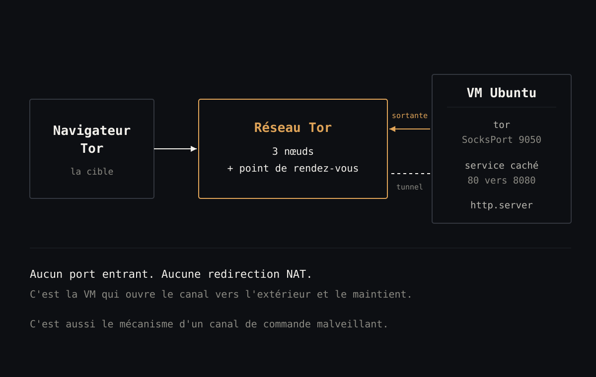

02 · Lab réseau · 2026
Service onion auto-hébergé
Publier un service web sur le réseau Tor depuis une machine virtuelle, sans ouvrir un seul port entrant. Cinq pièges documentés, quatre qui m'ont coûté des heures.
- Cadre
- Laboratoire personnel
- Rôle
- Conception et réalisation seul
- Environnement
- VirtualBox, Ubuntu Server, 4 Go, 2 vCPU
- Livrable
- Scripts, diagnostic, documentation

Contexte
Un service caché Tor est joignable sans que le serveur ait d'adresse IP publique ni de port entrant à exposer. La question de départ : est-ce que je peux publier quelque chose depuis ma machine, derrière une box qui ne redirige rien, sans coût, et le prouver ?
La réponse intéresse la défense : un pare-feu entrant qui bloque tout ne suffit pas si les flux sortants sont libres. C'est exactement comme ça qu'un attaquant maintient un accès persistant.
L'architecture
Le mécanisme repose sur un renversement : le service n'est joignable que parce que c'est la machine qui sort vers le réseau Tor et maintient le canal ouvert.
Navigateur Tor, puis réseau Tor (trois nœuds et un point de rendez-vous), puis connexion sortante initiée par la VM, puis Tor local, puis le service caché qui dirige le port 80 vers 127.0.0.1:8080, puis le serveur applicatif lié à la boucle locale uniquement.
Ce que j'ai fait
- Machine virtuelle déclarative. Disque, mémoire et réseau définis par commandes, pour que le lab soit reproductible et pas cliqué.
- Installation non supervisée d'Ubuntu Server avec une étape de configuration passée par l'installateur.
- Script de publication. Installation de Tor, répertoire du site, configuration du service caché, redémarrage, affichage de l'adresse.
- Service verrouillé. Le serveur HTTP écoute uniquement sur la boucle locale, jamais sur l'interface réseau.
- Vérification. Requête à travers un proxy SOCKS Tor et contrôle du code de réponse.
- Diagnostic. Un script séparé qui liste les ports en écoute, la configuration active et le journal.
Résultat
- Ports ouverts sur l'hôte
- 0
- Coût
- 0 €
- Mise en place
- environ 25 min
Le service est joignable depuis un navigateur Tor, confirmé par un code de réponse 200 et par le contenu servi. Aucune redirection entrante, aucune règle de pare-feu assouplie, aucune IP publique révélée.
Choix assumé : l'adresse onion et les identifiants du lab ne sont pas publiés. Le lab tourne encore, et exposer une adresse ou un accès dans un portfolio public revient à publier une porte ouverte en espérant que personne ne la remarque. La démarche est reproductible, c'est ce qui compte.
Les cinq pièges
| Piège | Cause réelle |
|---|---|
| Démarrer un service dans la post installation de l'installateur | La commande s'exécute dans un chroot. On ne démarre pas un service dans un chroot, donc l'installation échoue alors que le disque est complet. Une post installation doit rester de la configuration pure. |
| Faire résoudre une adresse onion par le client lui-même | Les versions récentes refusent, conformément à la RFC 7686, et l'enveloppe proxy ne l'intercepte pas. Il faut laisser le proxy résoudre le nom. |
| Passer une commande complexe à travers SSH depuis Windows | La couche de citation détruit les guillemets internes et le shell distant reçoit la commande coupée. Envoyer le script par l'entrée standard. |
| Un script préparé sous Windows | Fins de ligne et locale française cassent tout : le retour chariot est interprété comme une commande. Écrire en LF. |
| Tester un service par un simple test de port | La redirection NAT accepte la connexion avant que le service existe. Un port qui répond n'est pas une preuve. |
Limites
- Service statique : aucune surface d'authentification à durcir.
- Pas de durcissement système poussé, ni mise à jour automatique, ni filtrage applicatif.
- Aucune mesure de latence à travers le réseau Tor, alors qu'elle varie fortement.
- Le lab valide la publication d'un service, pas la sécurité d'une application.
Ce que j'en retiens
Le geste technique est simple, la compréhension du mécanisme l'est beaucoup moins. La question « pourquoi le NAT suffit ici et pas pour un site classique » force à regarder dans quel sens le flux s'établit, et c'est exactement le raisonnement qu'un pare-feu mal configuré laisse passer.
Deuxième leçon : la documentation des erreurs vaut plus que le résultat. Un script qui marche une fois ne prouve pas la maîtrise. Une cause expliquée, si.